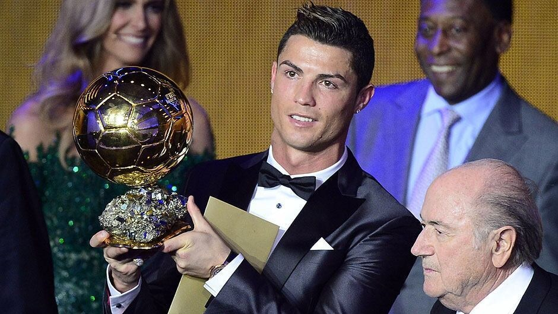

2013 Ballon d'Or Vote Extended to 'Steal' It from Ribéry
Ribéry's five trophies: In 2012-13 the French winger Franck Ribéry powered Bayern Munich to a Bundesliga, DFB-Pokal, Champions League, UEFA Super Cup and Club World Cup quintuple, the team's absolute core. With such glittering team and individual achievements, he was the Ballon d'Or favourite, tipped by German legends and the European press.
Blatter's gaffe: In October 2013 FIFA president Sepp Blatter publicly mocked Ronaldo during an Oxford Union speech, mimicking him 'standing like a commander on the parade ground' and saying he 'preferred Messi'. The partisan remark caused uproar; Real Madrid and the Portuguese camp protested strongly and Ronaldo briefly considered boycotting the ceremony. Blatter rushed out an apology praising Ronaldo.
The bizarre extension: With the Blatter 'mock-then-praise' row still bubbling, in November 2013 FIFA suddenly announced it was extending the Ballon d'Or voting deadline from 15 November to 29 November, citing 'low turnout'. Worse, votes already submitted could be changed. The unprecedented move was widely read as tailor-made to flip the vote for Ronaldo.
Hat-trick vs Sweden: During the extension window came the World Cup play-off, Portugal vs Sweden, in which Ronaldo produced an epic hat-trick to single-handedly knock out Ibrahimović. The blockbuster performance fell exactly inside the new voting window and instantly swung the electorate. Without the extension, there would have been no stage for this turnaround — the 'coincidence' of timing invited suspicion.
Result and outcry: Ronaldo won in the end; Ribéry could only finish third (behind Messi). The result set off a media firestorm, with Germany's Bild and France's L'Équipe thundering; Ribéry himself repeatedly said in interviews 'I was robbed of the Ballon d'Or'. Bayern bosses Rummenigge and Heynckes publicly questioned FIFA's fairness, making this one of the Ballon d'Or's all-time controversies.
Historical significance: The 2013 Ballon d'Or is a textbook case of 'procedural unfairness undermining the legitimacy of the outcome': Ribéry deserved it on team honours, only to be overturned by an ad-hoc rule change and Blatter's 'apology-compensation'. CNN nailed it: 'Mock him, then praise him, then hand him the trophy' — a farce in three acts that thoroughly broke an award's reputation.